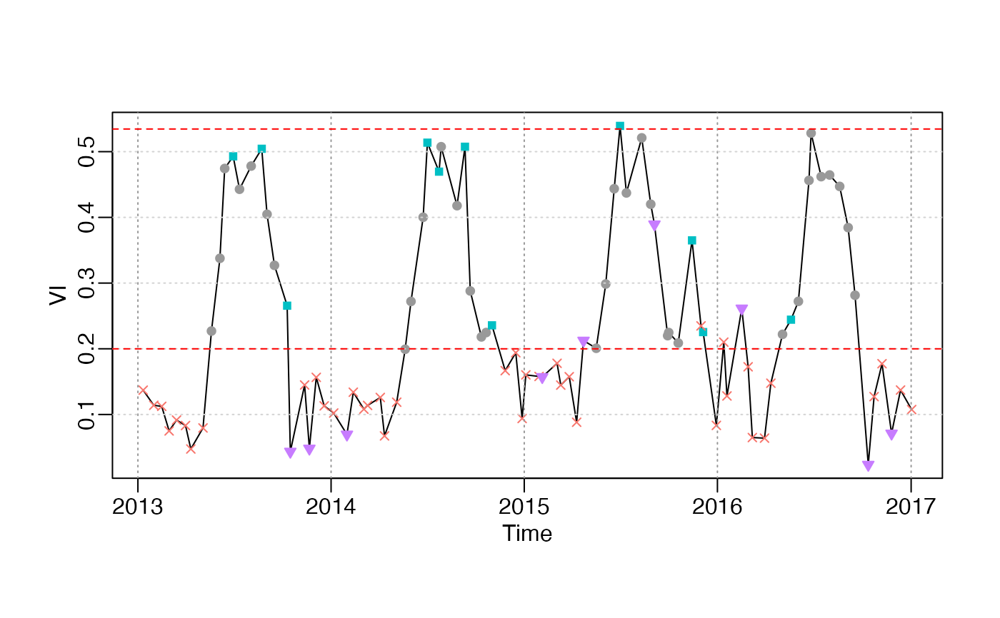

Check input data, interpolate NA values in y, remove spike values, and set weights for NA in y and w.
check_input(
t,
y,
w,
QC_flag,
nptperyear,
south = FALSE,
wmin = 0.2,
wsnow = 0.8,
ymin,
missval,
maxgap,
alpha = 0.02,
alpha_high = NULL,
date_start = NULL,
date_end = NULL,
mask_spike = TRUE,
na.rm = FALSE,
...
)Numeric vector, Date variable
Numeric vector, vegetation index time-series
(optional) Numeric vector, weights of y. If not specified,
weights of all NA values will be wmin, the others will be 1.0.
Factor (optional) returned by qcFUN, levels should be
in the range of c("snow", "cloud", "shadow", "aerosol", "marginal", "good"), others will be categoried into others. QC_flag is
used for visualization in get_pheno() and plot_curvefits().
Integer, number of images per year.
Boolean. In south hemisphere, growing year is 1 July to the following year 31 June; In north hemisphere, growing year is 1 Jan to 31 Dec.
Double, minimum weight of bad points, which could be smaller the weight of snow, ice and cloud.
Doulbe. Reset the weight of snow points, after get ylu.
Snow flag is an important flag of ending of growing
season. Snow points is more valuable than marginal points. Hence, the weight
of snow should be great than that of marginal.
If specified, ylu[1] is constrained greater than ymin. This
value is critical for bare, snow/ice land, where vegetation amplitude is quite
small. Generally, you can set ymin=0.08 for NDVI, ymin=0.05 for EVI,
ymin=0.5 gC m-2 s-1 for GPP.
Double, which is used to replace NA values in y. If missing,
the default vlaue is ylu[1].
Integer, nptperyear/4 will be a suitable value. If continuous
missing value numbers less than maxgap, then interpolate those NA values by
zoo::na.approx; If false, then replace those NA values with a constant value
ylu[1].
Replacing NA values with a constant missing value (e.g. background value ymin)
is inappropriate for middle growing season points. Interpolating all values
by na.approx, it is unsuitable for large number continous missing segments,
e.g. in the start or end of growing season.
Double, in [0,1], quantile prob of ylu_min.
Double, [0,1], quantile prob of ylu_max. If not
specified, alpha_high=alpha.
starting and ending date of the original vegetation
time-sereis (before add_HeadTail)
Boolean. Whether to remove spike values?
Boolean. If TRUE, NA and spike values will be removed;
otherwise, NA and spike values will be interpolated by valid neighbours.
Others will be ignored.
A list object returned:
t : Numeric vector
y0: Numeric vector, original vegetation time-series.
y : Numeric vector, checked vegetation time-series, NA values are interpolated.
w : Numeric vector
Tn: Numeric vector
ylu: = [ymin, ymax]. w_critical is used to filter not too bad values.
If the percentage good values (w=1) is greater than 30\
The else, if the percentage of w >= 0.5 points is greater than 10\
w_critical=0.5. In boreal regions, even if the percentage of w >= 0.5
points is only 10\
We can't rely on points with the wmin weights. Then, y_good = y[w >= w_critical], ymin = pmax( quantile(y_good, alpha/2), 0) ymax = max(y_good).
data("CA_NS6")
d = CA_NS6
head(d)
#> site y date t w QC_flag
#> 1: CA-NS6 0.1531 2010-01-01 2010-01-08 0.2 snow
#> 2: CA-NS6 0.1196 2010-01-17 2010-01-25 0.2 snow
#> 3: CA-NS6 0.1637 2010-02-02 2010-02-13 0.2 snow
#> 4: CA-NS6 0.1301 2010-02-18 2010-02-25 0.2 snow
#> 5: CA-NS6 0.1076 2010-03-06 2010-03-21 0.2 snow
#> 6: CA-NS6 0.0990 2010-03-22 2010-03-23 0.2 snow
nptperyear <- 23
INPUT <- check_input(d$t, d$y, d$w, QC_flag = d$QC_flag,
nptperyear = nptperyear, south = FALSE,
maxgap = nptperyear/4, alpha = 0.02, wmin = 0.2)
plot_input(INPUT)
